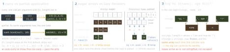

javascript · folio
In one line: Functions are values: pass them, return them, let them close over state. Build
behaviour from small functions over values you do not mutate:
currying and partial application fix arguments, pipe chains steps,
toSorted / with copy instead of mutating, iterator helpers pull one
value at a time, and a tagged template is a function call on a template’s pieces.
Download PDF Print view LaTeX source


Currying, partial application, composition
- Currying turns
f(a, b, c)intof(a)(b)(c), one argument per call; an auto-curry (diagram 1) also takes several per step. Partial application fixes some and returns a function of the rest:f.bind(t, 10),(...r) => f(10, ...r). bindalso fixesthis— ignored by arrows (lexicalthis) and bynew(bound arguments are still prepended). The bound function has noprototype;instanceofuses the target’s.pipe(f, g)(x)=g(f(x)): left to right, areduce.compose(f, g)(x)=f(g(x)): right to left (maths order), areduceRight. Steps take one value: curry first.|>pipeline operator — Stage 2, Hack style: the right side is any expression with a topic placeholder,x |> f(%) |> g(%, 1); the%token is not final. TC39 has rejected F# pipes (right side = a unary function) several times.
const curry = (fn, n = fn.length) => function curried(...args) {
return args.length >= n ? fn.apply(this, args)
: (...more) => curried.apply(this, [...args, ...more]); };
const sum3 = (a, b, c) => a + b + c;
curry(sum3)(1)(2)(3); curry(sum3)(1, 2)(3); // 6, 6
const pipe = (...fs) => x => fs.reduce((v, f) => f(v), x);
const compose = (...fs) => x => fs.reduceRight((v, f) => f(v), x);
const inc = x => x + 1, dbl = x => x * 2;
pipe(inc, dbl)(3); compose(inc, dbl)(3); // 8, 7
Array.from({ length: 4 }, (_, i) => i * i); // [0, 1, 4, 9]Array methods — what comes back
| method | returns | edge cases |
|---|---|---|
map(f) | array, same length | holes stay holes; f is not called on them |
filter(p) | array | keeps references, does not copy items |
flatMap(f) | array | map + flat(1); a non-array stays one item |
reduce(f, init) | any value | no init: starts at index 1, [] → TypeError, one item → returned, f never called |
find, findLast | item | undefined if none — ambiguous if stored |
findIndex, findLastIndex | index | -1 if none |
some, every | boolean | stop at the first decisive item; [] → false, true |
forEach(f) | undefined | no break short of a throw |
Object.groupBy | null-proto object | keys coerced to string or symbol |
Map.groupBy | Map | any value as key |
groupBy is static because Array.prototype.groupBy broke sites that load the Sugar library (versions until 1.4.0 patched it), and .group broke code using arrays as hash maps.
Copy, don’t mutate
| mutates · returns | copies · returns the new array |
|---|---|
sort(cmp) · the same array | toSorted(cmp) |
reverse() · the same array | toReversed() |
splice(i, n, ...x) · the removed items | toSpliced(i, n, ...x) |
a[i] = v · v | with(i, v) — RangeError if out of range |
push(x), unshift(x) · new length | [...a, x], [x, ...a] |
pop(), shift() · the removed item | a.slice(0, -1), a.slice(1) |
- Copies are shallow and dense: holes become
undefined([3, , 1].toSorted()→[1, 3, undefined]);withcounts a negative index from the end. TypedArrays gettoSorted,toReversed,with— notoSpliced. - Objects:
{...o, k: v}copies one level.Object.freeze(o)returns the sameoand is shallow — nested objects stay writable; writing a frozen property throws TypeError in strict code and is silently dropped in sloppy code. - Records & Tuples (deeply immutable, compared by value) were withdrawn at Stage 2 on 14 Apr 2025: no consensus for new primitives. The successor, Composites, makes objects, not primitives — early stage.
Lazy: generators + iterator helpers
- Calling a
function*runs nothing: it returns a generator; eachnext()runs to the nextyieldand parks the frame — only that frame is kept, so a sequence can be infinite. - Generators and the array,
Map,Setand string iterators inheritIterator.prototype, so helpers chain directly; an array needs.values(); any iterable ornext()object →Iterator.from(x). - Lazy, return an iterator:
map filter flatMap take drop. Consuming:reduce toArray forEach some every find. IteratorflatMapmust get an iterator or iterable back — a string throws TypeError;take,drop: RangeError for a negative or NaN count. - Single pass, no fork: helpers share their source, and a consumed iterator just yields nothing — no error.
breakor a throw infor…ofcallsreturn(): the generator runs itsfinallyand is finished for good.
function* naturals() { let n = 1; while (true) yield n++; }
naturals().map(n => n * n).filter(n => n % 2 === 0)
.take(3).toArray(); // [4, 16, 36] - map ran 6 times
Iterator.concat([1, 2], new Set([3])).toArray(); // [1, 2, 3]
Iterator.zip([[1, 2, 3], ['a', 'b']]).toArray();
// [[1, 'a'], [2, 'b']] shortest by default; 'longest', 'strict'
Object.groupBy([1, 2, 3, 4], n => n % 2 ? 'odd' : 'even');
// { odd: [1, 3], even: [2, 4] } null prototype
const memo = f => { const cache = new Map(); // f(x) once per x
return x => cache.getOrInsertComputed(x, f); };
const sql = (strs, ...vals) => ({
text: strs.reduce((q, s, i) => q + '$' + i + s), values: vals });
sql`SELECT * FROM t WHERE id = ${7}`;
// { text: 'SELECT * FROM t WHERE id = $1', values: [7] }Tags, IIFE, arguments, code from strings
- A tagged template may hold invalid escapes (
\unicode): cookedundefined, raw kept; untagged it is a SyntaxError.String.raw`Hi\n${2 + 3}!`→Hi\n5!(6 characters). A tag may return anything — a function, a query object; anhtmltag must escape the values, ansqltag sends them as parameters. - IIFE
(function () { … })(),(() => { … })(): the parentheses make it an expression — a private scope run once; each module now has its own. Modules have top-levelawait: an async IIFE is for CommonJS and classic scripts. arguments: array-like (nomap), absent in arrows. In sloppy code with only simple parameters it is aliased:arguments[0] = 99changesa; strict code or default / rest / destructured parameters break the link....restis a real array.- Direct
eval(s)sees the local scope; indirect(0, eval)(s),eval?.(s)andnew Function('a', 'return a + 1')see only globals.node:vm: “not a security mechanism. Do not use it to run untrusted code.”
Traps
['1', '2', '3'].map(parseInt)→[1, NaN, NaN]: the index becomes the radix (parseInt('2', 1)). Usemap(Number).[10, 9, 1].sort()→[1, 10, 9]: compared as strings — and the array itself is reordered.toSorted((a, b) => a - b).xs.forEach(async x => …)returns before anyawaitsettles: usefor…of+await, orPromise.all(xs.map(f)).- A line starting with
(,[or ` continues the previous one:const a = b+ newline +(() => {})()isb(() => {})(). Start such a line with;.
Remember
Curry: one argument per call · partial: some now · pipe: left to right · copy:
toSorted, with · iterators: lazy, one pass · tag: a call on the pieces.